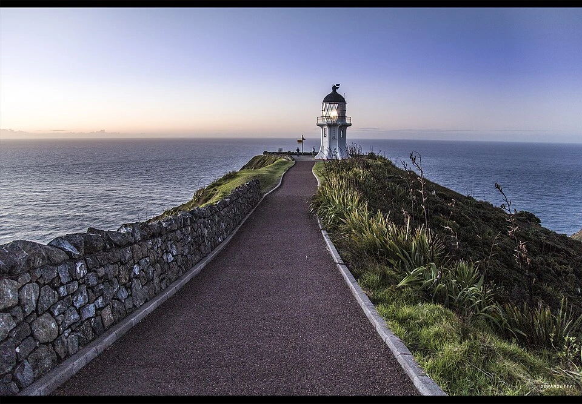

Нортленд
Cape Reinga — мыс Реинга
Культура и история · Пейзажи и панорамы
Главное в регионеМаяк над океаном на крайнем севере страны. Для маори мыс Реинга — священное место, откуда души умерших отправляются на родину предков. Посещение удобно включить в поездку по Нортленду.
Время на посещениеПолдня на мысе; полный день с дорогой из Бей-оф-Айлендс
НагрузкаЛегко
Подробнее
У маяка встречаются воды Тасманова моря и Тихого океана. Для маори это место духовного перехода: здесь особенно важны спокойное поведение и уважение к священной территории. Можно ограничиться дорожкой к маяку или добавить соседние бухты; для пикника лучше выбрать Tapotupotu Bay.
Билеты и бронирование
Перед поездкой проверьте условия посещения на сайте DOC — природоохранной службы Новой Зеландии. Автобусные экскурсии и обзорные полёты бронируются отдельно.
20–40 минут у маяка; длинный поход не нужен
Машина + короткая прогулка
Нортленд
Мыс Реинга
Cape Reinga
Маяк над океаном на крайнем севере страны.
Время на посещениеПолдня на мысеНагрузкаЛегко